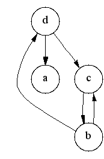
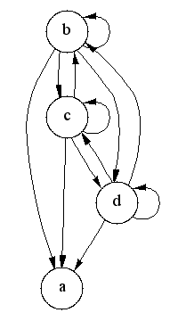

transitive_closure
transitive_closure
 transitive_closure
transitive_closure
template <typename Graph, typename GraphTC,
typename P, typename T, typename R>
void transitive_closure(const Graph& g, GraphTC& tc,
const bgl_named_params<P, T, R>& params = all defaults)
template <typename Graph, typename GraphTC,
typename G_to_TC_VertexMap, typename VertexIndexMap>
void transitive_closure(const Graph& g, GraphTC& tc,
G_to_TC_VertexMap g_to_tc_map, VertexIndexMap index_map)
The transitive closure of a graph G = (V,E) is a graph G* =
(V,E*) such that E* contains an edge (u,v) if and
only if G contains a path (of at least one
edge) from u to v. The transitive_closure()
function transforms the input graph g into the transitive
closure graph tc.
Thanks to Vladimir Prus for the implementation of this algorithm!
boost/graph/transitive_closure.hpp
A directed graph, where the Graph type must model the Vertex List Graph, Adjacency Graph, and Adjacency Matrix concepts.OUT: GraphTC& tc
Python: The parameter is named graph.
A directed graph, where the GraphTC type must model the Vertex Mutable Graph and Edge Mutable Graph concepts.
Python: This parameter is not used in Python. Instead, a new graph of the same type is returned.
This maps each vertex in the input graph to the new matching vertices in the output transitive closure graph.IN: vertex_index_map(VertexIndexMap& index_map)
Python: This must be a vertex_vertex_map of the graph.
This maps each vertex to an integer in the range [0, num_vertices(g)). This parameter is only necessary when the default color property map is used. The type VertexIndexMap must be a model of Readable Property Map. The value type of the map must be an integer type. The vertex descriptor type of the graph needs to be usable as the key type of the map.
Default: get(vertex_index, g) Note: if you use this default, make sure your graph has an internal vertex_index property. For example, adjacenty_list with VertexList=listS does not have an internal vertex_index property.
Python: Unsupported parameter.
|  |  |
The algorithm used to implement the transitive_closure() function is based on the detection of strong components[50, 53]. The following discussion describes the algorithm (and some relevant background theory).
A successor set of a vertex v, denoted by Succ(v), is the set of vertices that are reachable from vertex v. The set of vertices adjacent to v in the transitive closure G* is the same as the successor set of v in the original graph G. Computing the transitive closure is equivalent to computing the successor set for every vertex in G.
All vertices in the same strong component have the same successor set (because every vertex is reachable from all the other vertices in the component). Therefore, it is redundant to compute the successor set for every vertex in a strong component; it suffices to compute it for just one vertex per component.
The following is the outline of the algorithm:
for each vertex u in G' in reverse topological order
for each vertex v in Adj[u]
if (v not in Succ(u))
Succ(u) = Succ(u) U { v } U Succ(v) // "U" means set union
The vertices are considered in reverse topological order to
ensure that the when computing the successor set for a vertex
u, the successor set for each vertex in Adj[u]
has already been computed.
An optimized implementation of the set union operation improves the performance of the algorithm. Therefore this implementation uses chain decomposition [51,52]. The vertices of G are partitioned into chains Z1, ..., Zk, where each chain Zi is a path in G and the vertices in a chain have increasing topological number. A successor set S is then represented by a collection of intersections with the chains, i.e., S = Ui=1...k (Zi & S). Each intersection can be represented by the first vertex in the path Zi that is also in S, since the rest of the path is guaranteed to also be in S. The collection of intersections is therefore represented by a vector of length k where the ith element of the vector stores the first vertex in the intersection of S with Zi.
Computing the union of two successor sets, S3 = S1 U S2, can then be computed in O(k) time with the following operation:
for i = 0...k
S3[i] = min(S1[i], S2[i]) // where min compares the topological number of the vertices
| Copyright © 2001 | Jeremy Siek, Indiana Univ.(jsiek@cs.indiana.edu) |